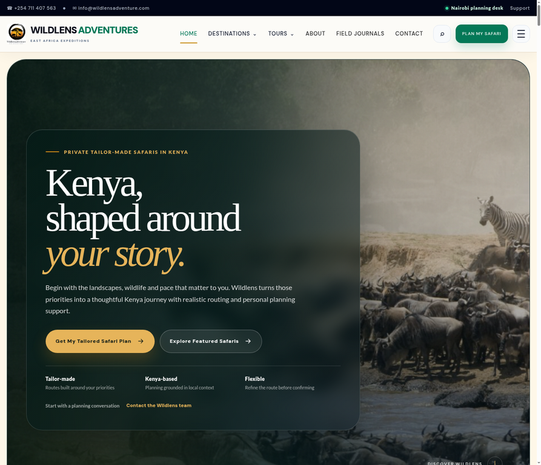

Explore three public website case studies. Each describes the site’s purpose and visitor journey without unverified outcome claims; a separate note records the former StyledKid storefront.
02 / OUR WORK
SELECTED WEBSITE PROJECTS
Different businesses. Built around their purpose.
WildLens Adventure, Knews254 and Menwe Primary & Junior School are shown with screenshots of their public homepages. The former StyledKid storefront appears only in historical project notes because no current public screenshots or product catalogue are available. No unverified performance or sales claims are made.
01 / WEBSITE↗

Live homepage screenshot captured 22 October 2026.
TRAVEL · SAFARI PLANNING
WildLens Adventure
A website for a Kenya safari and wildlife-tour business, helping visitors explore travel styles, destinations and sample journeys before starting a planning conversation.
VISITOR GOAL
Explore safari options and start a tailored Kenya trip-planning conversation.
PROJECT FOCUS
Website design and development
VISITOR JOURNEY
Explore safari styles and destinations, then begin a tailored trip-planning enquiry.
These studio-authored notes describe project scope and visible visitor journeys; they are not client quotations or claims of measured outcomes. The StyledKid note is historical: its former storefront is no longer available to verify, so no current product catalogue or screenshot is shown.
01 / TRAVEL
WildLens Adventure
Help visitors explore safari styles and destinations, then begin a tailored Kenya trip-planning conversation.
HISTORICAL NOTE / FAMILY RETAIL
StyledKid
Present family-retail categories through a clear online-store journey. The current domain no longer shows the former store.
02 / EDUCATION
Menwe Primary & Junior School
Help families understand Menwe’s learning pathways and school life, then find a clear next step for admissions or a visit.
03 / NEWS & PUBLISHING
Knews254
Present Kenya- and East Africa-focused headlines through a clear, section-based news experience.
ILLUSTRATIVE PROJECT WALKTHROUGH
From a busy menu to a clearer food brand.
This is a concept exercise—not commissioned client work, a testimonial or a claim of measured results. It shows how Kioo Studio could approach a real brief.
01 / THE CHALLENGE
Make the offer easier to understand
A hypothetical neighbourhood food business shares daily specials across scattered posts. New customers may struggle to find the menu, understand the offer or know how to order.
02 / THE APPROACH
Bring the important details together
Build a consistent visual direction, a clear menu format, reusable promotional captions and one obvious WhatsApp ordering path.
03 / THE DELIVERABLES
A practical starter kit
Short brand and offer description
Menu and promotion templates
Caption prompts for weekly specials
Contact and ordering call to action
04 / HOW SUCCESS WOULD BE CHECKED
Measure before claiming results
After launch, compare WhatsApp enquiry clicks, menu visits and completed orders against a baseline agreed with the business. No performance result is claimed here because no real campaign has run.
For future client projects: case studies will be published only with client permission and with results supported by evidence.